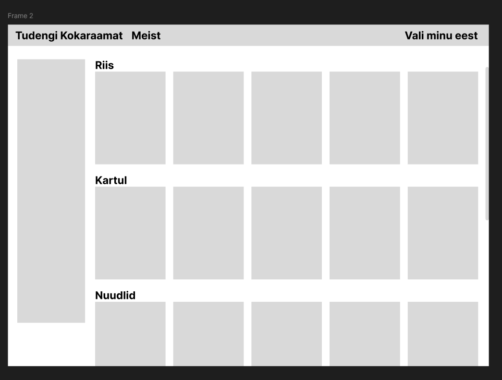

Koorepasta kanaga
Lihtne, maitsev ja soodne retsept, mis sobib ideaalselt tudengile.

Valmistamisaeg: 25 minutit
Portsjonid: 2
Raskusaste: Lihtne
Koostisosad
- 200 g pastat
- 200 g kanafileed
- 100 ml vahukoort
- 1 küüslauguküüs
- Sool ja pipar
- Õli praadimiseks
Valmistamisõpetus
- Pane pasta soolaga maitsestatud vette keema.
- Lõika kanafilee väikesteks tükkideks.
- Kuumuta pannil õli ja prae kana kuldpruuniks.
- Lisa hakitud küüslauk ja vahukoor.
- Maitsesta soola ja pipraga.
- Sega valmis pasta kastmega kokku.
- Serveeri soojalt.